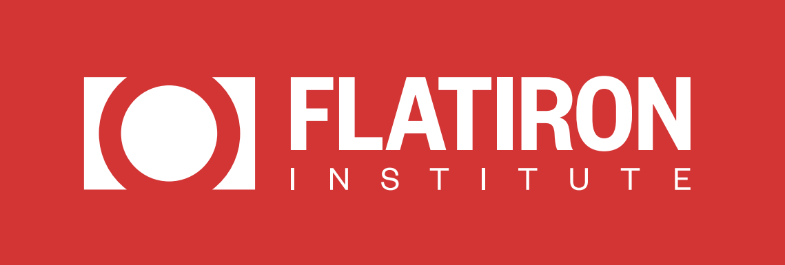

Lessons learned from ML in Gravitational wave
Kaze Wong

- I did my PhD in the physics department @ JHU
- I am an assistant research professor in AMS
- I am a software engineerer with DSAI
- I spend 20-30% of my time on domain science research
- 30-40% of my time thinking about ML methods
- The rest supporting computing needs from others scientists